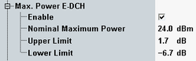

Max. Power E-DCH Limits
The conformance test specification defines a test for verification of the maximum UE power with active HS-DPCCH and E-DCH. Refer to 3GPP TS 34.121, section 5.2B "Maximum Output Power with HS-DPCCH and E-DCH". The test comprises five subtests.
At the end of each subtest procedure, the maximum output power has to be measured and checked against tolerance values.
You can configure the expected maximum power and a pair of tolerance values in the configuration dialog. The limit applies to measurements with TPC setup "Max. Power E-DCH".

Max. power E-DCH limit settings
3GPP defines the following requirements depending on the subtest and on the power class of the UE. The default settings correspond to subtest 1 for power class 3.